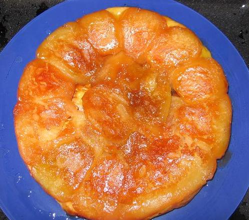

Recette n° 90 :
Tarte Tatin, la vraie, celle des
soeurs Tatin de La-Motte-Beuvron

Ingrédients
(pour 8 personnes) :
- un moule spécial pour Tatin (24 cm de diamètre, bords
hauts)
- 150 g de beurre de très bonne qualité (le goût de
la tarte en dépend beaucoup)
- 125 g de sucre
- 1 kg de pommes plutôt fermes (de type granit par exemple)
- une pâte feuilletée (ou brisée, selon goût)
Préparation :
- beurrer le moule avec tout
le beurre
- parsemer ce beurre de tout
le sucre
- mettre le four à préchauffer à 180C/200C
- éplucher les pommes
- couper ces pommes en quartiers, déposer ces quartiers sur la
partie bombée côte à côte, remplir les
intervalles de grosses tranches
- mettre sur la gazinière à feu doux de 10 à 15
minutes en surveillant de façon à constater que la
caramélisation commence
- enfourner et laisser
cuire 15 minutes
- sortir du four et déposer un fond de pâte
feuilletée ou brisée un peu plus grand que le
diamètre du moule
- remettre au four 15 minutes
- sortir du four et laisser reposer quelques minutes
- poser un plat de service sur le moule, bien saisir l'ensemble moule
et plat avec des chiffons (pour ne pas se brûler) et retourner
vivement
- servir aussitôt, de préférence nature (les
gourmand[e]s accompagnent d'une glace à la vanille, mais c'est
un pêché car les soeurs Tatin ne l'ont jamais fait)
Observations :
1 - cette recette est celle que préfèrent les Lichonneux,
les gardiens du secret de la vraie tarte Tatin des soeurs Tatin de
La-Motte-Beuvron, la recette détenue par le Grand Maître
du Secret
2 - en cas de fabrication antérieure, on peut réchauffer
à feu doux dix minutes avant de servir, mais ne jamais passer au
four à micro-ondes